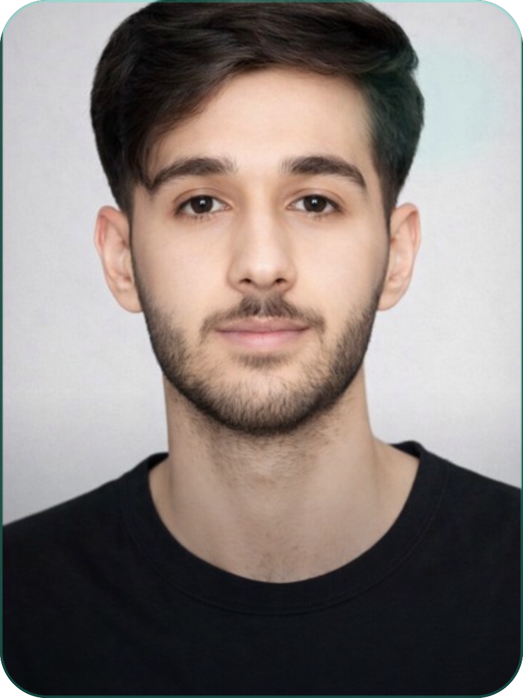

Available for AI/ML, research and product roles
AI SYSTEMS / COMPUTER VISION / RESEARCH
Syed Muhammad
Awais Raza.
I build production AI systems
AI/ML engineer and B.S. Artificial Intelligence student turning difficult ideas into useful systems - from FastAPI products and YOLO tracking to 3D fMRI transfer learning and low-bit LLM research.

AI/ML EngineerBuild. Test. Explain.
PyTorch + TensorFlow
FastAPI + Docker
CV + RAG + MLOps
PYTHONPYTORCHFASTAPIYOLOREACT NATIVEPOSTGRESQLDOCKERRAGMLOPS
PYTHONPYTORCHFASTAPIYOLOREACT NATIVEPOSTGRESQLDOCKERRAGMLOPS
01 / ABOUT
I do more than train models.
I build the system around them.
My portfolio is organized around evidence: the problem, the design choices, my role, the tools, the measurable result, and what I learned.
PROFILE
Engineering mindset with a research habit.
I work across data preparation, model development, APIs, application integration, deployment, evaluation, and technical communication. I care about leakage-safe experiments, reproducible outputs, honest claims, and interfaces that make the work usable.
Alongside university and project work, I founded the Hexagon AI/ML Society to help learners move from Python fundamentals toward complete AI pipelines.
Awais Raza AI/ML Engineer
Context before code
Every case study starts with the user or research problem, not a list of libraries.
Evidence before claims
Metrics, ablations, limitations, and failure cases are part of the deliverable.
Systems, not notebooks
APIs, packaging, synchronization, data contracts, and product behavior make models useful.
Explain the thinking
Reports and case-study pages show why each decision was made and what changed.
02 / SELECTED WORK
Projects worth a
second look.
Recent work first, with a mix of production applications, computer vision, data engineering, desktop software, and research.
No projects match that search.
03 / RESEARCH LAB
From an idea to a
testable hypothesis.
These systems are presented with clear separation between proposed contributions, implemented prototypes, verified results, and remaining experiments.
04 / CAPABILITIES
What I can contribute
to a team.
Applied AI & ML
Clean data pipelines, model benchmarking, deep learning, evaluation, calibration, and interpretable outputs.
- Tabular ML
- Computer vision
- NLP & RAG
Full-Stack AI Products
FastAPI services, React/React Native interfaces, databases, PDF generation, and production integration.
- API design
- PostgreSQL
- Mobile/web apps
Research Prototyping
Literature-to-architecture translation, careful baselines, ablation plans, subject-wise validation, and reports.
- Experiment design
- Transfer learning
- Quantization
ML Engineering
Reproducible pipelines, Docker, MLflow/DVC concepts, structured logging, model APIs, and deployment-minded code.
- Docker
- CI/CD
- MLOps foundations
05 / TECH STACK
Tools selected for
the problem.
AI / Deep Learning
PyTorchTensorFlowscikit-learnYOLOTransformersSpeechBrainOpenCVRAG
Backend / Data
FastAPIFlaskPostgreSQLpgvectorRedisSQLAlchemySupabaseMongoDB
Product / MLOps
DockerGitHub ActionsMLflowDVCAirflowStreamlitReact NativeNext.js
Data / Visualization
PandasNumPyMatplotlibPlotlyJupyterEDAStatisticsLinear Algebra
06 / EXPERIENCE & EDUCATION
A timeline of
building and leading.
JUL - AUG 2025
AI/ML Intern / ML Engineering Lead
O2Geeks AI ProgramWorked across computer vision, NLP, OCR, AR, semantic search, and pgvector-based RAG. Built and deployed production ML pipelines with FastAPI, Streamlit, and Docker under technical leadership.
2023 - 2027
B.S. Artificial Intelligence
COMSATS University Islamabad, Attock CampusCoursework includes programming, data structures, databases, software engineering, linear algebra, statistics, machine learning, deep learning, computer vision, NLP, and MLOps foundations.
2024 - PRESENT
Founder, Hexagon AI/ML Society
Community & TeachingCreated a practical Python-to-ML-to-MLOps learning community, teaching through live sessions, code-first blogposts, roadmaps, and project mentoring.
2024 - 2025
Tech Team Member
Microsoft Learn Student AmbassadorsSupported campus-wide AI/ML workshops and technical events, earning a Certificate of Appreciation for contributions to the team.
07 / LEADERSHIP
Learning scales
when it is shared.
I use teaching to sharpen technical thinking, build confidence in others, and turn complicated roadmaps into practical weekly progress.
Visit Hexagon AI/ML ↗08 / CERTIFICATES & RECOGNITION
Continuous learning,
documented.
Certificates support the work, but the project case studies remain the main evidence of capability.
Available for work
09 / CONTACT
Have a difficult AI problem?
Let's make it testable.
For internships, AI/ML engineering roles, research collaboration, product work, or technical mentoring.